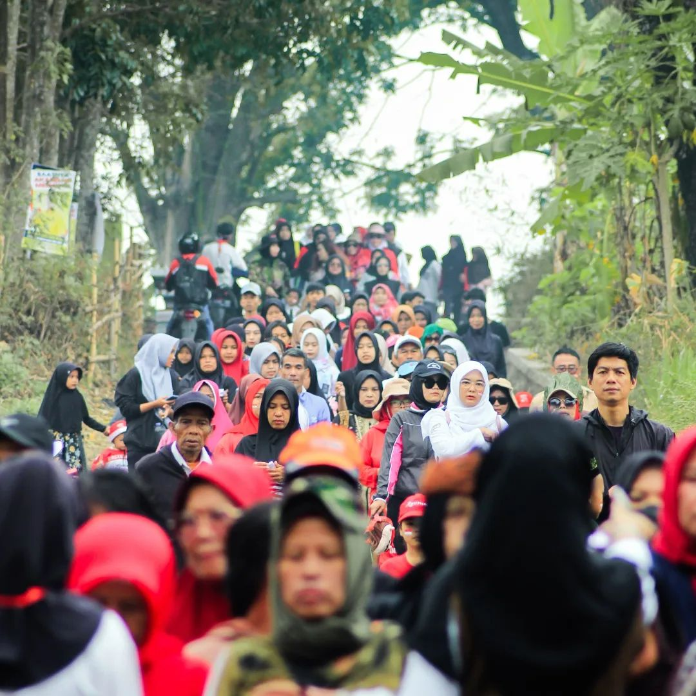
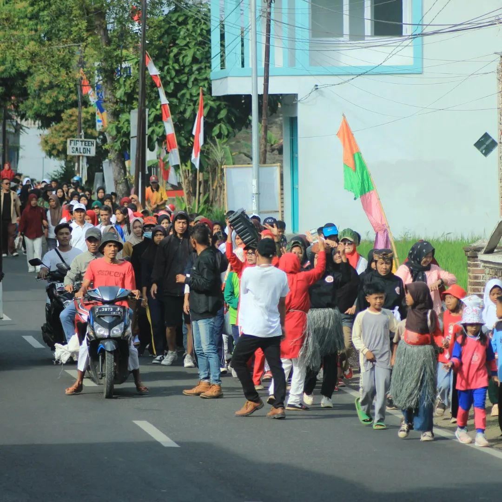
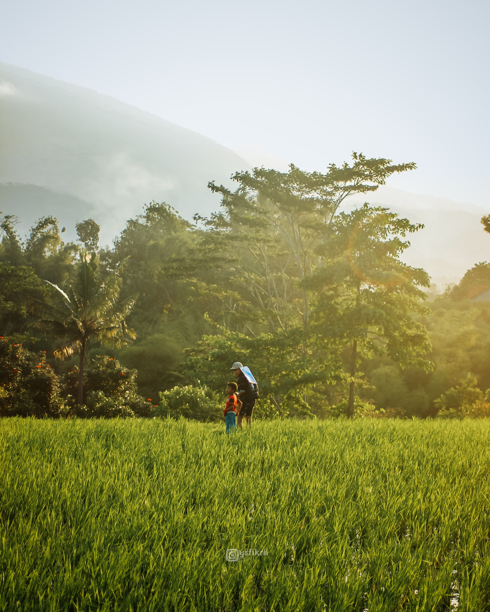
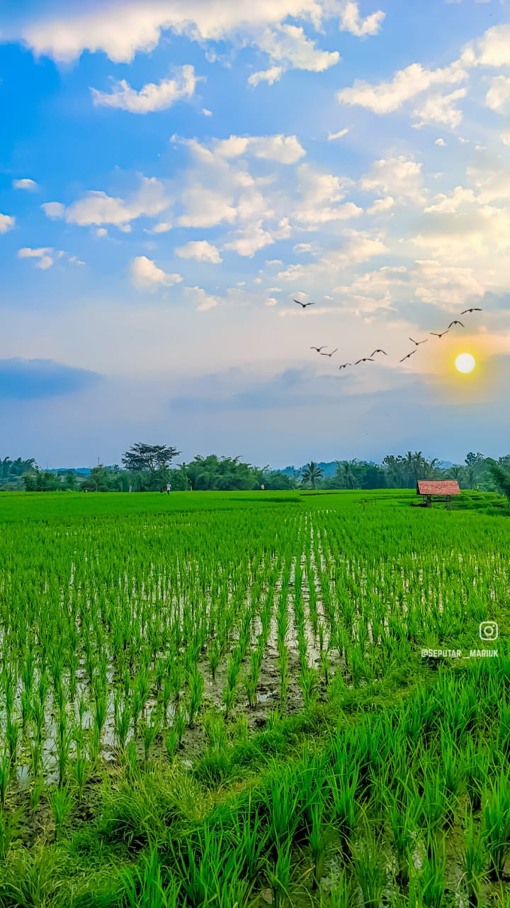

Galeri Kampung Mariuk
Potret keindahan sudut-sudut Kampung Mariuk





Menjelajahi keindahan alam yang asri, keramahan warga, dan kekayaan budaya yang tak ternilai harganya.
Jelajah KampungMengenal lebih dekat keunikan Kampung Mariuk
Kampung Mariuk adalah permata tersembunyi yang menawarkan ketenangan dan keaslian suasana pedesaan. Di sini, waktu seolah berjalan lebih lambat, membiarkan Anda menikmati setiap hembusan angin segar dan hijaunya pekarangan.
Kami memegang teguh adat istiadat leluhur, menjaga gotong royong, dan senantiasa menyambut tamu dengan senyuman hangat khas masyarakat desa.
Kekayaan sumber daya yang memajukan masyarakat
Tanah subur yang menghasilkan padi berkualitas dan hasil bumi melimpah sebagai sumber utama ekonomi warga.
Kreativitas warga dalam mengolah hasil alam menjadi produk bernilai jual tinggi dan kerajinan tangan unik.
Spot-spot foto instagramable dan pemandangan alam yang memukau bagi para pecinta traveling.
Potret keindahan sudut-sudut Kampung Mariuk